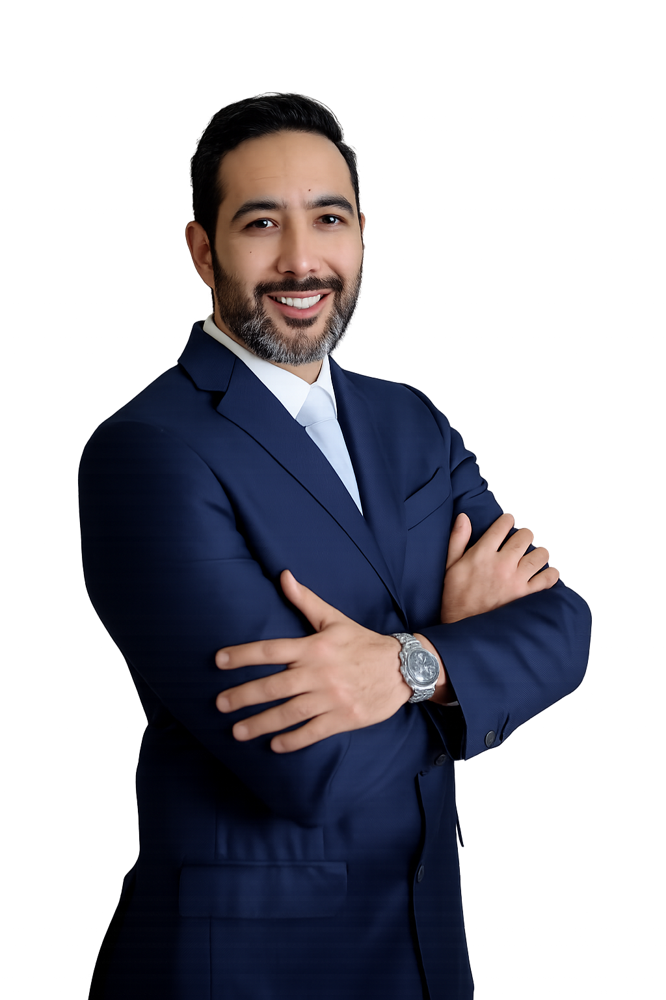

Especialista Certificado · Consejo Mexicano de Anestesiología
Procedimientos dentales
sin dolor ni ansiedad
Anestesiología médica especializada aplicada a odontología. Realizada por médico anestesiólogo certificado, en quirófano con aval sanitario vigente y monitoreo continuo.
Cédula Médico: 3566974
·
Especialidad: 4955868
·
ACLS · PALS

¿Cómo podemos ayudarte?
Atención especializada para cada necesidad
Para Pacientes
¿Tienes miedo o ansiedad al ir al dentista? La sedación médica te permite recibir tu tratamiento dental de forma tranquila, segura y sin estrés.
- Sin dolor durante el procedimiento
- Sin ansiedad ni miedo
- Recuperación rápida y supervisada
Para Dentistas
Amplía tus servicios y ofrece a tus pacientes una experiencia de nivel hospitalario. Trabajamos en coordinación directa con el especialista tratante.
- Integración total con tu consulta
- Más procedimientos, más ingresos
- Diferenciación competitiva
+200
Pacientes atendidos
5★
Calificación en Google
100%
Quirófano certificado COFEPRIS
2
Cédulas verificables SEP
Opiniones Reales de Google
Lo que dicen nuestros pacientes
Más de 25 reseñas de 5 estrellas verificadas en Google.
Reseñas verificadas en Google